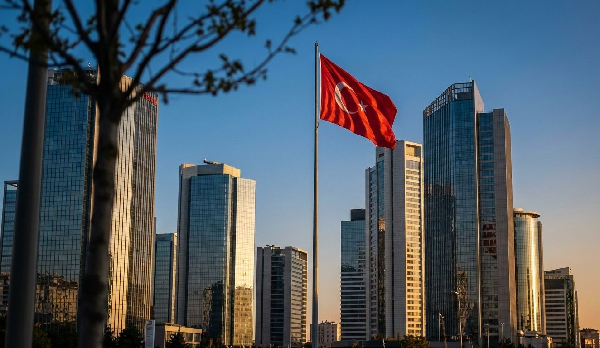
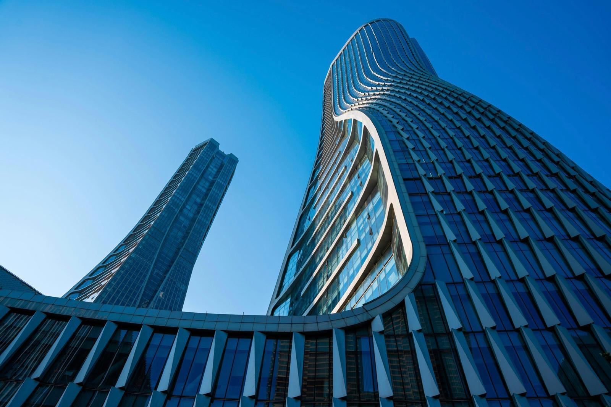

Uzmanlığın profesyonel standartlarla buluştuğu yer.
Beyribey L&C, müvekkillerimize en yüksek kalitede hukuki hizmet sunmak için kurulmuş, deneyimli ve uzman kadrosuyla hizmet veren bir hukuk bürosudur.
Yılların birikimi ve profesyonel yaklaşımımızla, müvekkillerimizin haklarını en iyi şekilde korumak ve hukuki sorunlarına çözüm bulmak için çalışıyoruz.

Farklı hukuk disiplinlerinde ihtisaslaşmış, akademik derinliği sektörel tecrübeyle harmanlayan uzman kadromuz; karmaşık hukuki süreçleri analitik bir bakış açısıyla yöneterek, müvekkillerimiz için en etkin ve sürdürülebilir çözümleri hayata geçirmektedir.
Dinamik bir yapıda seyreden ulusal ve uluslararası mevzuat değişikliklerini anlık olarak takip ederek, hukuki normları derinlemesine bir yetkinlikle yorumluyor ve müvekkillerimizin ticari hedefleriyle bütünleşen güncel ve stratejik çözümler üretiyoruz.
Karmaşık ticari ihtilafların yönetiminde, yargısal süreçlerin yanı sıra tahkim ve müzakere gibi alternatif çözüm yollarını proaktif bir yaklaşımla değerlendirerek, riskleri minimize eden ve müvekkil menfaatini en üst düzeyde koruyan sonuç odaklı stratejiler uyguluyoruz.
Geniş bir yelpazede hukuki hizmet sunuyoruz. Uzman kadromuzla farklı hukuk alanlarında deneyimli hizmet sağlıyoruz.

Vergi incelemeleri neticesinde düzenlenen vergi ve ceza ihbarnameleri, vergi suçlarına istinaden başlatılan soruşturmalar ile özel ve genel usulsüzlük cezalarından kaynaklanan ihtilafların çözümünde yetkin hukuki danışmanlık ve dava vekilliği hizmeti sunmaktadır. İdari aşamada uzlaşma süreçlerinin yönetilmesi ve yargı aşamasında dava dilekçelerinin teknik esaslara uygun olarak hazırlanması süreçleri, mevzuatın güncel içtihatlarla harmanlanması suretiyle titizlikle yürütülmektedir.
Maddi vergi hukukuna ilişkin uyuşmazlıklarda; Damga Vergisi, Kurumlar Vergisi, Gelir Vergisi, Katma Değer Vergisi (KDV) ve Özel Tüketim Vergisi (ÖTV) başta olmak üzere, her türlü vergi türünden doğan tarhiyatlara karşı hukuki çözüm sağlanmaktadır. Mükellef haklarının korunması amacıyla, vergi mahkemeleri ve yüksek yargı nezdindeki tüm süreçler, mali ve hukuki perspektifin birleşimiyle profesyonelce takip edilmekte ve çözüme kavuşturulmaktadır.
Uluslararası ticaret işlemlerinde gümrük idarelerince tesis edilen ek tahakkuk kararları ve para cezalarından kaynaklanan Gümrük Vergisi uyuşmazlıklarının çözümüne odaklanılmaktadır. Eşyanın gümrük kıymeti, tarife sınıflandırması veya menşei gibi teknik hususlara dayalı olarak tahakkuk ettirilen vergisel yükümlülüklerin hukuka uygunluk denetimi, uzman kadromuzca gerçekleştirilmektedir.
Gümrük vergilerinden doğan mali ihtilafların giderilmesi amacıyla, idari itiraz yollarının tüketilmesi ve akabinde vergi yargısında iptal davalarının açılması süreçleri bütüncül bir yaklaşımla ele alınmaktadır. Münhasıran gümrük vergisi ve buna bağlı mali mükellefiyetlerden kaynaklanan uyuşmazlıklarda, müvekkillerimizin ticari menfaatlerini koruyan etkin hukuki stratejiler geliştirilmektedir.
İcra ve İflas Hukuku alanındaki faaliyetlerimiz, ticari ve şahsi alacakların tahsili amacıyla ilamlı, ilamsız ve kambiyo senetlerine (çek, bono, poliçe) özgü haciz yolları ile takiplerin başlatılması ve infaz işlemlerinin yürütülmesini kapsamaktadır. Otoyol ve altyapı işletmeciliği başta olmak üzere, farklı sektörlerde faaliyet gösteren öncü kurumsal şirketlerin geniş hacimli icra portföyleri ve alacak takip süreçleri, büromuzun güçlü operasyonel altyapısıyla profesyonelce yönetilmektedir.
Borçlu malvarlığının tespiti, haciz tatbiki ve satış aşamaları, cebri icra prosedürlerine tam uyum çerçevesinde, alacağın en hızlı ve etkin şekilde tahsilini sağlayacak yöntemlerle yönetilmektedir. Aleyhe başlatılan icra takiplerinde ise müvekkillerimizin hak kaybına uğramaması adına borca ve imzaya itiraz süreçleri ile menfi tespit, istirdat ve ihalenin feshi davaları özenle takip edilmektedir. İcra hukukunun şekli sıkı kuralları gözetilerek, gerek alacaklı gerekse borçlu vekilliğinde, sürecin her aşamasında profesyonel hukuki destek sağlanmaktadır.
Sermaye piyasası araçlarının ihracı, halka arz süreçlerinin (IPO) yönetimi ve Sermaye Piyasası Kurulu nezdindeki izin ve başvuru süreçlerinde müvekkillerimize kapsamlı hukuki danışmanlık hizmeti sunmaktayız. İzahname ve sirkülerin hazırlanmasından, borçlanma araçlarının ihracına ve zorunlu pay alım tekliflerine kadar uzanan geniş bir yelpazede, mevzuata tam uyumun sağlanması hedeflenmektedir.
Halka açık şirketlerin kurumsal yönetim ilkelerine uyumu, kamuyu aydınlatma yükümlülüklerinin yerine getirilmesi ve idari para cezalarına karşı itiraz süreçlerinde etkin rol almaktayız. Sermaye piyasası suçları ve piyasa dolandırıcılığı iddialarına ilişkin soruşturmalarda ise teknik bilgi birikimimizle müvekkillerimizin hukuki güvenliğini sağlamaktayız.
Rekabet hukuku departmanımız, birleşme ve devralma işlemlerinin Rekabet Kurumu nezdinde bildirilmesi, izin süreçlerinin yürütülmesi ve menfi tespit/muafiyet başvurularının gerçekleştirilmesi konularında uzmanlaşmıştır. Kartel soruşturmaları, hakim durumun kötüye kullanılması ve uyumlu eylem iddialarına ilişkin yürütülen ön araştırma ve soruşturma süreçlerinde, şirketlerin savunma stratejilerini titizlikle oluşturmaktayız.
Rekabet Kurumu kararlarına karşı idari yargı yoluna başvurulması ve rekabet ihlallerinden kaynaklanan tazminat davalarının takibinde müvekkillerimizi temsil etmekteyiz. Ayrıca, şirket içi uyum programlarının (compliance) oluşturulması ve rekabet hukuku eğitimleri ile potansiyel risklerin minimize edilmesini sağlamaktayız.
Sınır ötesi ticari ihtilafların çözümünde, ICC, LCIA, ISTAC gibi ulusal ve uluslararası tahkim kuralları çerçevesinde yürütülen yargılamalarda müvekkillerimizi vekil olarak temsil etmekteyiz. Tahkim anlaşmalarının hazırlanmasından, hakem heyeti seçimine ve duruşma süreçlerine kadar olan tüm aşamaları, uluslararası standartlara ve usul hukukuna hakim kadromuzla yönetmekteyiz.
Yabancı hakem kararlarının Türkiye'de tanınması ve tenfizi süreçlerinin yanı sıra, yatırım tahkimi ve alternatif uyuşmazlık çözüm yöntemlerinde de stratejik danışmanlık sağlamaktayız. Karmaşık ve çok taraflı ticari uyuşmazlıklarda, müvekkillerimizin menfaatlerini en üst düzeyde koruyacak çözüm odaklı yaklaşımlar geliştirmekteyiz.
Elektrik, doğal gaz, petrol ve madencilik sektörlerinde faaliyet gösteren yerli ve yabancı yatırımcılara; lisanslama, üretim, dağıtım ve ticaret aşamalarında düzenleyici mevzuata uyum konusunda danışmanlık vermekteyiz. Enerji Piyasası Düzenleme Kurumu (EPDK) nezdindeki işlemler ile yenilenebilir enerji projelerinin geliştirilmesi ve alım garantisi mekanizmalarına ilişkin süreçleri yakından takip etmekteyiz.
Enerji santrallerinin kurulumu ve işletilmesine dair EPC (Mühendislik, Tedarik ve İnşaat) sözleşmeleri ile işletme ve bakım anlaşmalarının hazırlanması ve müzakeresinde aktif rol almaktayız. Sektöre özgü regülasyonlardan ve sözleşmelerden kaynaklanan uyuşmazlıklarda, teknik ve hukuki yetkinliğimizle müvekkillerimizin yanındayız.
Büyük ölçekli altyapı, enerji, gayrimenkul ve sanayi yatırımlarının finansmanı süreçlerinde; kredi sözleşmeleri, teminat paketleri ve doğrudan sözleşmelerin hazırlanması ve müzakeresi konularında hizmet sunmaktayız. LMA (Loan Market Association) standartlarına uygun sendikasyon kredileri ve refinansman projelerinde, borçlu ve kreditör tarafları en üst düzeyde temsil etmekteyiz.
Kamu-Özel İşbirliği (PPP) projeleri başta olmak üzere, karmaşık finansman yapılarının hukuki risk analizlerini gerçekleştirmekte ve projenin bankalanabilirliğini sağlayacak hukuki altyapıyı oluşturmaktayız. Finansal kapanış aşamasına kadar olan tüm süreçte, teknik danışmanlar ve finans kuruluşları ile koordineli bir çalışma yürütmekteyiz.
Yerli ve yabancı sermayeli şirketlerin kuruluşu, esas sözleşme tadilleri, genel kurul ve yönetim kurulu toplantılarının organizasyonu gibi günlük kurumsal işlemlerde sürekli hukuki destek sağlamaktayız. Hissedarlar sözleşmelerinin (SHA) hazırlanması, sermaye artırımı/azaltımı işlemleri ve kurumsal yönetim ilkelerine uyum konularında, Türk Ticaret Kanunu hükümleri çerçevesinde danışmanlık vermekteyiz.
Şirketlerin yeniden yapılandırılması, nev'i değişikliği, bölünme ve tasfiye süreçlerinin yönetilmesinin yanı sıra, yönetici sorumluluğundan doğan uyuşmazlıklarda da müvekkillerimizi temsil etmekteyiz. Ticari hayatın dinamiklerine uygun, önleyici hukuk hizmetleri ile şirketlerin hukuki risk haritalarını çıkarmaktayız.
Marka, patent, endüstriyel tasarım ve faydalı model gibi sınai mülkiyet haklarının tescili, korunması ve devri konularında Türk Patent ve Marka Kurumu nezdindeki süreçleri yönetmekteyiz. Fikri hak ihlallerinin tespiti, tecavüzün önlenmesi, hükümsüzlük ve tazminat davalarının açılması ve takibinde uzman kadromuzla hizmet vermekteyiz.
Telif hakları, ticari sırlar ve haksız rekabetten kaynaklanan uyuşmazlıklarda; lisans sözleşmelerinin hazırlanması ve müzakeresi süreçlerini yürütmekteyiz. Müvekkillerimizin marka değerini ve inovatif varlıklarını korumak adına, ulusal ve uluslararası düzeyde etkin bir fikri mülkiyet stratejisi izlemekteyiz.
Gayrimenkul geliştirme projeleri, arsa payı karşılığı inşaat sözleşmeleri ve kentsel dönüşüm süreçlerinde; mülkiyetin devri, ayni hak tesisleri ve imar mevzuatından kaynaklanan konularda hukuki danışmanlık sunmaktayız. Alışveriş merkezleri, otel ve konut projelerinde; kira sözleşmeleri, yönetim planları ve FIDIC tabanlı inşaat sözleşmelerinin hazırlanması ve yorumlanmasında yetkin hizmet sağlamaktayız.
Tapu iptal ve tescil davaları, kamulaştırma uyuşmazlıkları ve inşaat hukukundan doğan ayıp ve eksik iş davalarında müvekkillerimizi mahkemeler nezdinde temsil etmekteyiz. Gayrimenkul yatırımlarının hukuki inceleme (due diligence) raporlarının hazırlanması ile yatırımların güvenli bir zeminde gerçekleşmesini temin etmekteyiz.
Bizimle iletişime geçmek için aşağıdaki bilgileri kullanabilirsiniz. Çalışma saatlerimiz haftaiçi 09:00 - 17:00 arasıdır.